Overview
In this project, I implemented the logic for sampling pixels, or systematically assigning colors to pixels by checking their bounds inside of a triangle. The majority of the project focuses on improving sampling technique, whether that's by brute force (supersampling) or approximation (barycentric coordinates and linear interpolation). I learned that approximation methods are generally less costly than supersampling, each with its own tradeoff. And finally, these techniques are applied to texture mapping, where we sample both the screenspace (pixels) and the texture space (texels).
Section I: Rasterization
Part 1: Rasterizing single-color triangles
SampleBuffer::fill_color: This function overrides the contents of a PixelColorStorage structure. It converts OpenGL's 0-1 RGBA scale to a 0-255 color scale.
DrawRend::rasterize_triangle: The rasterization method I used is identical to the one presented in lecture. The process is described below:
- Calculate the 3 vectors orthogonal to the 3 sides of the triangle.
- Form a "bounding box" around the triangle, whose bounds come from the min and max of the x and y values of the 3 points.
- Loop through all the pixels in the box. The point at the center of each pixel is tested against all 3 orthogonal vectors by taking the dot product of each vector with the point's vector. If all the products are greater than 0, then the pixel should be colored.
Since the algorithm literally checks each sample in the bounding box, its runtime should be no worse than this. Notably, some aliasing occurs, as evidenced by the jaggies in the screenshots below.

|
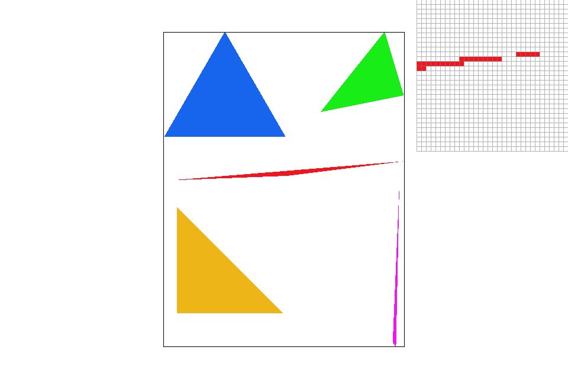
|
|
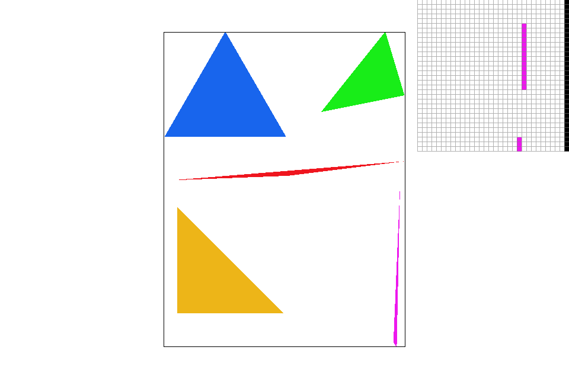
|
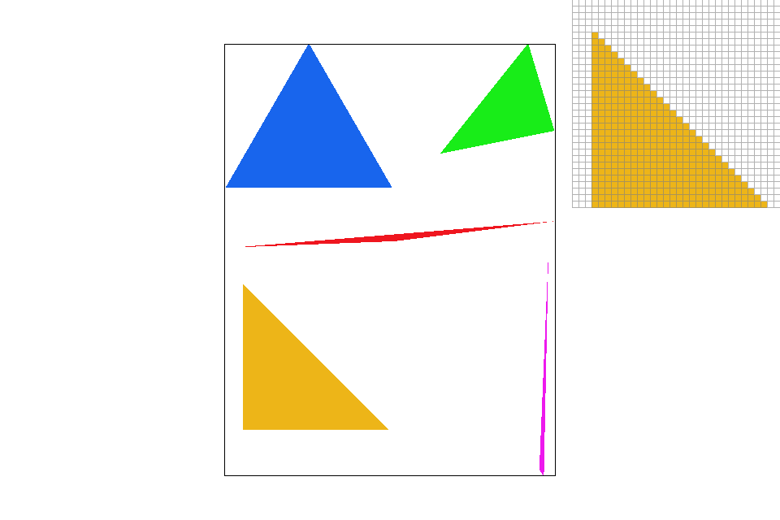
|
Part 2: Antialiasing triangles
SampleBuffer::get_pixel_color: PixelColorStorage structures are extracted from the pixel and averaged together, returned as a single color.
DrawRend::rasterize_triangle: Rasterizing uses the exact same method as the previous part, except while checking the bounding box, the number of calculations
increases by a factor of sample_rate. Conceptually, the logic does the same thing as dividing a pixel into a grid of sample_rate squares and then
checks the midpoint of each of those squares.
Observe the improved effects on the red triangle from Part 1.
|
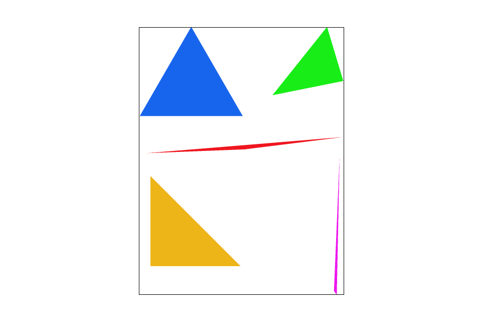
|
|

|
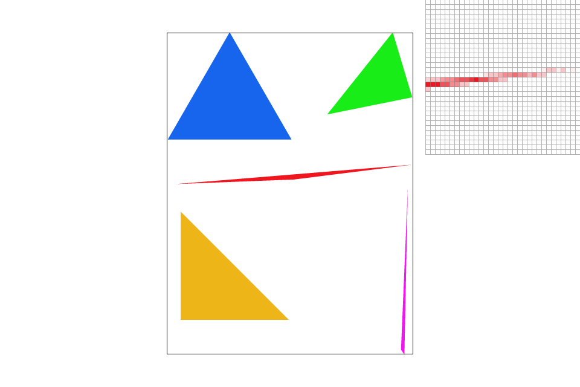
|
Part 3: Transforms
Transforms translate, scale, and rotate achieved by formatting 3x3 matrices according to the
homogenous matrices for these operations.
Demonstrated below is result of implementing the transform matrices, a red block pose. However, for maximum awesomeness, the coloring has been converted to orange, the best color, and the standing pose to a dab, the best pose. Images are supersampled at 16 samples per pixel for maximum quality.
|
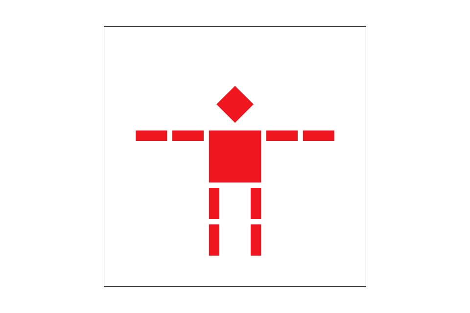
|
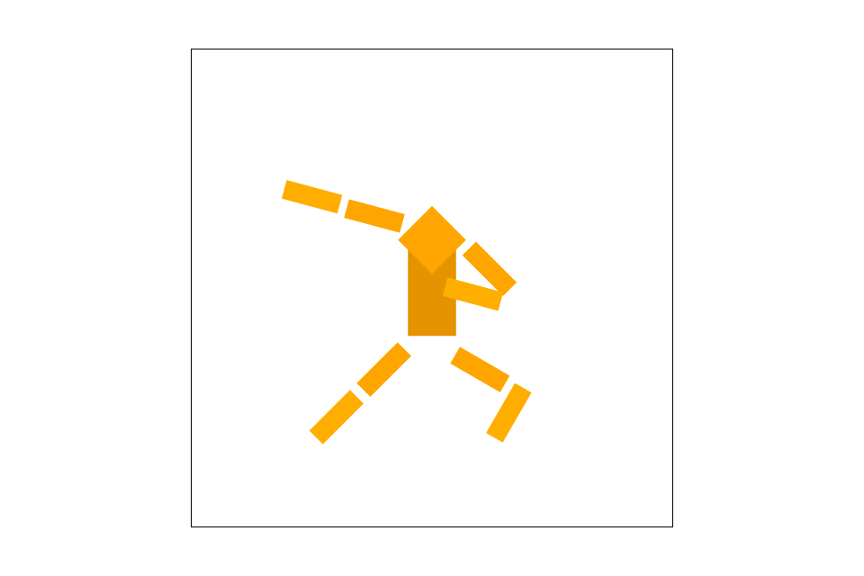
|
Section II: Sampling
Part 4: Barycentric coordinates
DrawRend::rasterize_triangle: This modification to the rasterization pipeline involves calculating the alpha, beta, and gamma scalars for the barycentric coordinates. Each scalar corresponds to a vertex of the triangle. For example, for a Vertex A, the scalar alpha is calculated by dividing the distance of the sample point from side BC with A's distance from the opposite side. Take the below image generated from the program:
Let's say A is the red vertex. Pixels very close to A are red because they are roughly equidistant from side BC. Pixels closer to BC are not as red.
ColorTri::color: Given alpha, beta, and gamma, we can calculate the appropriate color by multiplying each triangle point's color with its corresponding scalar and then adding all the values up.
Part 5: "Pixel sampling" for texture mapping
Pixel sampling in this case is not unlike the sampling I was doing before. However, in this case, there is some 2D texture that we want to map to a triangle mesh, and we do so by mapping the (x, y) pixel location in screen space to the (u, v) position in texture space and then sampling the surrounding "texels".
Nearest pixel sampling simply takes the exact texel that (u, v) is located inside and maps its values back to screen space. Bilinear sampling uses a 4-pixel square around the nearest texel and interpolates the values at these 4 texels.
DrawRend::rasterize_triangle: Nothing too much different here except it's now populating a SampleParams structure with the desired sampling method.
TexTri::color: This method calculates the (u, v) values from the point's barymetric values passed in from rasterize_triangle and populates the data structrure with them.
Texture::sample: Intermediate method that chooses between specific sampling methods.
Texture::sample_nearest: Returns the Color corresponding to the texel value at (floor(u), floor(v)).
Texture::sample_bilinear: Interpolates between the 4 nearest texel points.
Let's look at an example generated by the first texmapping:
|
|
|
|
|
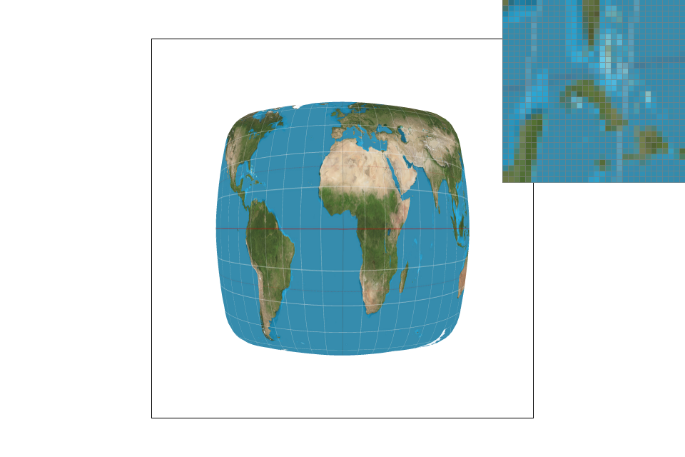
|
Bilinear sampling does better than nearest pixel since nearest pixel can misrepresent fine detail (i.e. frequency is much faster than sampling frequency). That's apparent from the way bilinear represents the structure of the islands above at fair quality even at low sampling. It's harder to tell the difference with increased supersampling just because increasing sampling frequency is bound to reduce the effects of aliasing.
Part 6: "Level sampling" with mipmaps for texture mapping
The rasterizer now a larger multitude of options as a result of implementing level sampling. The levels of the mipmap represent lower resolution versions of the same image. The intention is to increase the quality/rendering speed of the image by using high resolutions for close-up details and low resolutions for far away details, at the cost of the memory used to store the mipmap image. The way mipmapping was implemented:
DrawRend::rasterize_triangle: I added calculations for calculating the barycentric coordinates of the adjacent horizontal and vertical points.
TexTri::color: This function now contains arithmetic for calculating the uv values of the dx and dy values.
Texture::sample: Additional support for GUI options, including 3 different level samplings. The first uses default mipmap level 0, the second calculates the
appropriate mipmap level, and the third finds the nearest level and uses an adjacent level. The third option enables trilinear sampling when combined with bilinear sampling.
Let's make a final evaluation of these texture-filtering methods:
- Supersampling: high supersampling results in great quality and eliminates antialiasing artifacts effectively, at the cost of heavy computational power -- slow speeds and heavy memory use.
- Bilinear sampling: great for smoothing out pixels by approximating values "between" the texel points. Pure bilinear filtering is not as effective as supersampling, but it is less costly.
- Mipmapping: greatly reduces aliasing and increases computation speed at the cost of increased memory use.
- Trilinear sampling: a combination of mipmapping and bilinear sampling, so still not as costly as supersampling, but with the same tradeoffs. Trilinear filtering also results in blurrier high-frequency details.
|
|
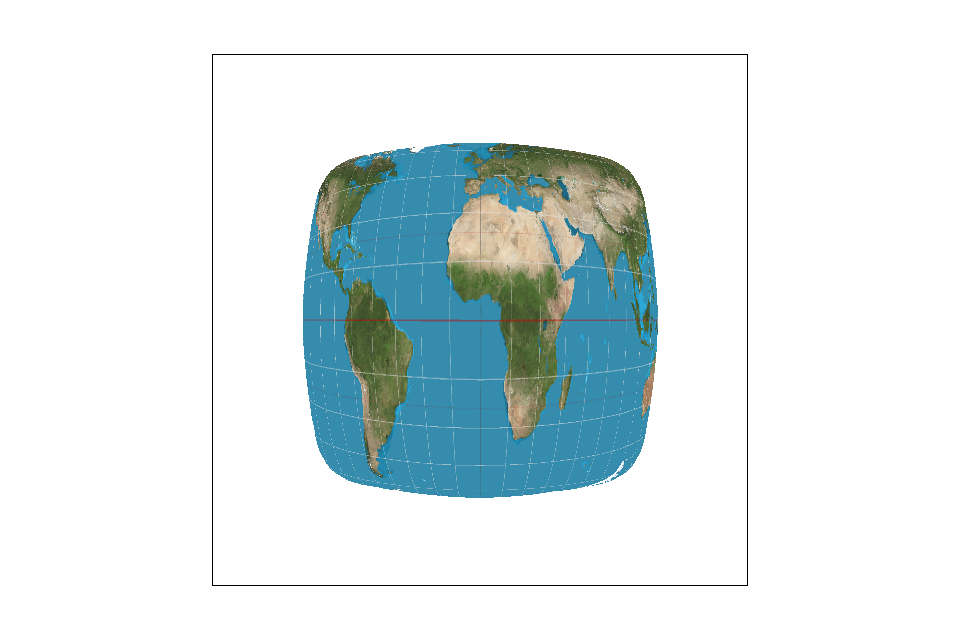
|
|
|
|
Please have this detailed png of an orange dragon I designed (art courtesy of Chiara Manderioli) but with different filtering methods.
|
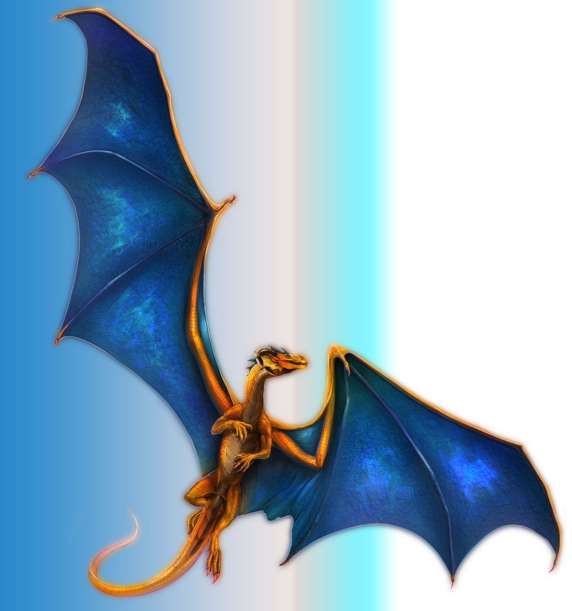
|
|
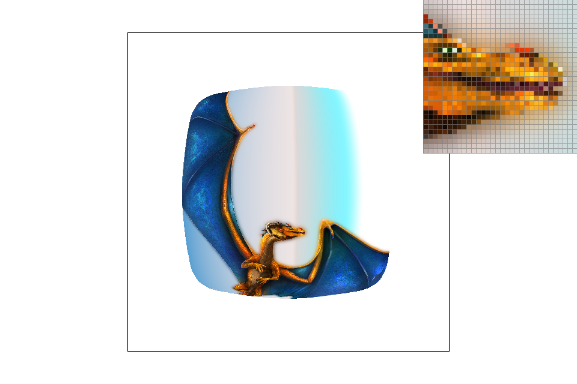
|
|
|
|
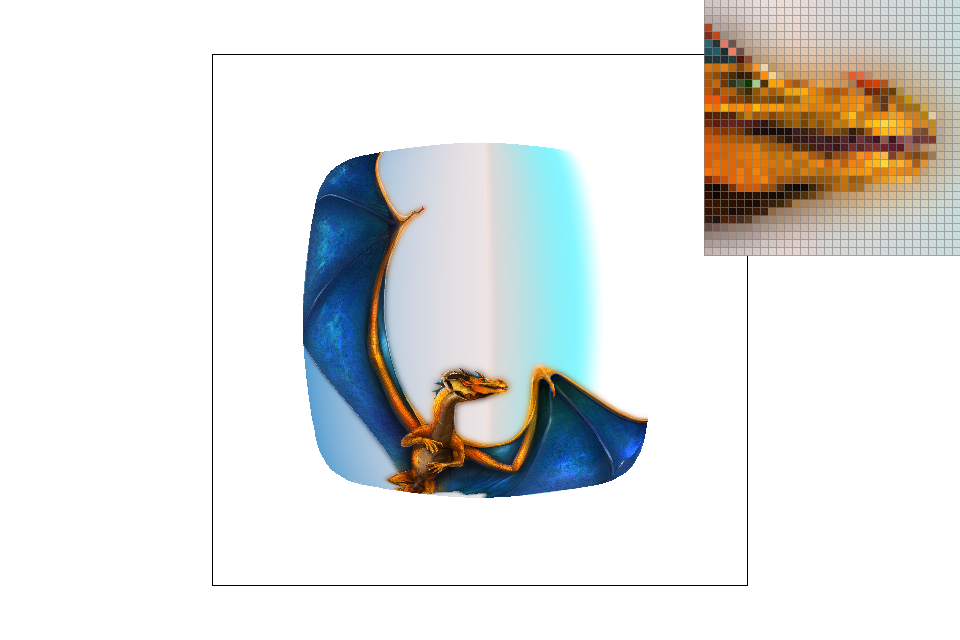
|
Note how changing to nearest level doesn't have a significant effect on the dragon's face because of the heavy detail, but it does alter the grainy quality of the wings. And that's all for project 1! :D
Section III: Art Competition
I really wanted to do this but I ran out of time because I was debugging all last day. :(